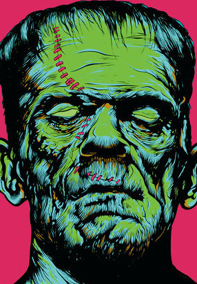

Frankenstein: The Modern Prometheus
Last week we finished Mary Shelley’s Frankenstein. She wrote the first draft in 1816 in Geneva, Switzerland in a horror story contest with Lord Byron (ugh), Percival Shelley, and others. It was published in 1818.
Main Themes
Some of the main themes in the book are ambition, revenge, and obsession.
Revenge
When the monster starts to strangle his family and friends, Victor becomes full of revenge and is obsessed with avenging his family, swearing on their graves and following the monster. The monster wants revenge on Frankenstein for making him miserable and angry. Because Frankenstein spurned the monster, they both become full of revenge.
Obsession
Victor Frankenstein is obsessed with building this huge creature in the beginning, fixated on creating life where there was none previously, and Galvanism and things that were related to Galvanism, for more than 2 years. The monster is obsessed with making Frankenstein disconsolate by destroying all he loves.
Ambition
Frankenstein was incredibly ambitious when he was 18 years old, building a monster in his dorm room, just because of the newest discovery of electricity and reanimation. This ambition led to his downfall. He was just thinking about creating this thing, and did not think of the consequences.
Dr. Ian Malcom put it very nicely:
Your scientists were so preoccupied with whether they could,
they didn’t stop to think if they should.
~ Jurassic Park
19 year-old Frankenstein was so obsessed with the idea that he could create life from nothing but stolen body parts and blood that we do not know the origin of in his college apartment, he didn’t think about if he should make a smaller thing, or if he should make anything at all.
Story Type
Genre
Frankenstein was the first of many genres. It is considered the first science fiction novel, with its main story steeped heavily with Galvanism, and the ideas that you can build a person (or a person-like monster). It is also regarded as one of the first goth/horror novels in the 1900’s.
Structure
Mary Shelley wrote something called a nested story. Nested stories got their names from Matryoshka dolls, or Russian Nesting Dolls.
A nested story is one that has a story inside a story, inside a story, etc. In Frankenstein, when Victor is at the ice cave with the monster, we switch to the monster’s story, then the cottager’s story. Frankenstein is a very popular example of a nested story, as it is done quite well.
Analysis of the Story
We had little previous knowledge of Frankenstein, but we still sort of knew the plot, so it was confusing where the book started.
We are introduced to Sir R. Walton, who is sailing in the Arctic seas after crossing Russia. He is in correspondence with his sister, Margaret. He recounts an interesting event that happened just a few days before. Him and his crew were joined by a mysterious figure floating on a piece of ice. The human then starts to tell his life story:
Frankenstein is born in Italy and his parents adopt a baby, then they return to Switzerland where Victor (Frankenstein) and Elizabeth (the Italian baby) grow up happily in peace. A few years before Frankenstein goes off to college, his mother dies, the first of many tragedies to strike. He heads off to college, where he meets M. Waldman, a chemist who takes Victor under his wing. Frankenstein becomes obsessed with reanimation and electricity, so he decides to start building a body.
He gets bones from old catacombs and tissues, organs, and other various materials needed for building a human through body snatching and grave-robbing. He also goes to slaughter houses to collect materials. All of those ways of getting materials would not be seen as normal today, but everybody was robbing graves back then, so it was a semi-normal thing to do.
Finally, the fateful night comes where Frankenstein animates his monster. The monster starts to move and Frankenstein is scared, so he hides. The next day, he runs into his childhood friend, Henry Clerval, who nurses him back to health and mental stability over the next year or so.
He returns to Geneva after receiving a letter that his 5 year-old brother William is dead. He gets there at night, after the gates have closed, and he runs into the monster, who has now been loose for 2 years. You do not have to retain that information, as he just forgets about William completely for the rest of the book.
One of their family friends is convicted of Williams murder and is hanged. Frankenstein then backpacks around Geneva and runs into the monster in his ice cave. He is told the monsters story, because everyone is now curious about what the monster has been doing. The monster learned a lot of things while he was just wandering around for 2 years.
- People do not like him
- People really do not like him
- People really, really, really do not like him at all
He eventually ended up trying to kidnap William, but ends up murdering him and framing a close family friend for the murder. He makes his way to the ice cave he is living in and asks Frankenstein to make a female monster for him. Frankenstein agrees, disagrees, has a long think, and agrees, only to disagree later in the book.
He returns home, to his fiancée Elizabeth, a.k.a. his sister. He does not want his family to be in danger while he builds the second monster, so he goes on a 2-3 year trip around Scotland, England, and Ireland, after abandoning Henry in London. He finds a small Scottish village where he settles for some amount of years.
The monster comes to visit to see how the creation process is going along, and at that point Victor decides to destroy the female monster, which was a great choice on his part (I say that with sarcasm). The monster flees after saying something very ominous: “I will be with you on your wedding night”, and Frankenstein is left alone.
He then continues to break down the half-built female and gathers all the parts into baskets and goes out to a boat at 4:00 am, to not look suspicious. He goes many miles out and dumps them into the ocean and falls asleep (another great choice).
He wakes up near a town, in Ireland, where he is immediately taken into custody by angry townspeople. The mayor of the town explains that he is in the exact same boat as the one used by a murderer the night before. He is shown the body so the townspeople can see how he reacts to seeing the body, possibly having something to do with Cruentation.
It is the body of Henry Clerval.
Obviously Frankenstein reacts poorly. The body does not start oozing blood, but his reaction was enough for the entire town to convict him of murder. He is tried, found innocent and is visited by his father who says: “Look, we’re all worried about you, so go get married to your sister”.
Elizabeth and Victor are married and honeymoon to Villa Lavenza, where Frankenstein is on guard all day with a pistol and everything. He sends Elizabeth back inside (what is it with this man and absolutely wonderful ideas). He hears screaming, and runs back inside to see his wife’s body on the bed, dead. He also sees the monster run away into the lake. His father dies soon after. He then swears on their graves (not Williams though…) that he will try to kill the monster as long as he lives (which won’t be for much longer)
We switch back to R. Walton writing a letter to his sister. Frankenstein is on his last legs. He makes Walton promise to kill the monster, which Walton agrees to do. Frankenstein then gives the crew a rousing speech to keep pressing forward (because their ship is stuck in ice), and then dies.
The monster comes back to mourn and is sad that he murdered all of those people (He didn’t mean to, they just all got strangled), and tells Walton that Frankenstein is his last victim and he will go either incinerate himself or freeze himself.
Conclusion
It is a very dramatic tale. We learned a lot of new words and compared it to different stories like Wonder (R. J. Palacio) and Notre-Dame de Paris ((Hunchback) Victor Hugo). It was a monumental novel for science fiction and essentially started an entirely new genre. There have been so many movies and parodies relating to Frankenstein.
Things I learned
Dr. Frankenstein, unlike the social subconscious stereotype, is not an evil old man with a hunched back, crazy goggles and Einstein hair in a big lab with lots and lots of body parts. He is a stupid 19 year old college drop-out who decided to build a monster in his dorm room with bodies from robbed graves. Also, the monster does not have a name. Society usually calls the monster Frankenstein and, Victor Dr. Frankenstein. The monsters name is Frankenstein’s Monster, not Frankenstein.
If I cannot inspire love, I will cause fear - Frankenstein